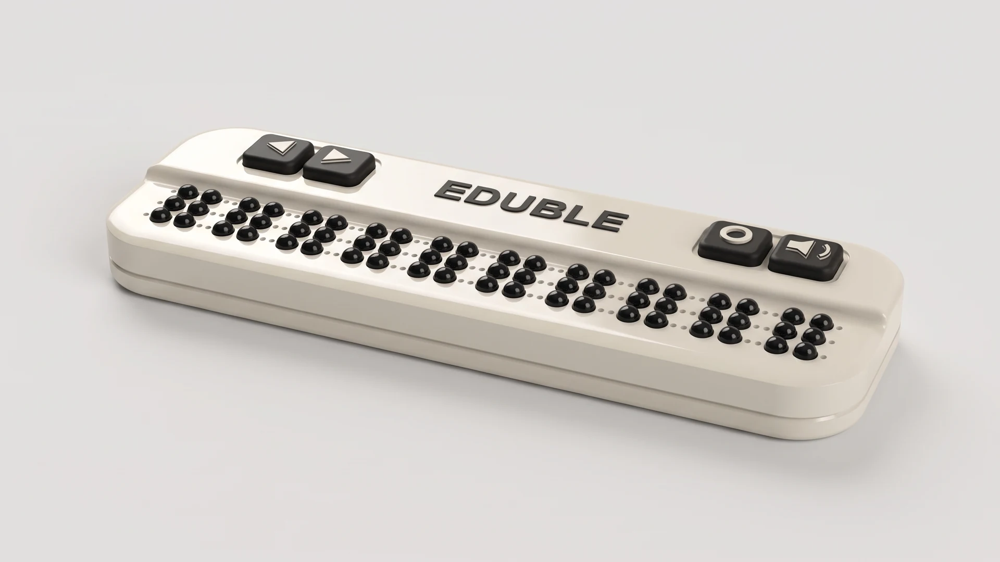
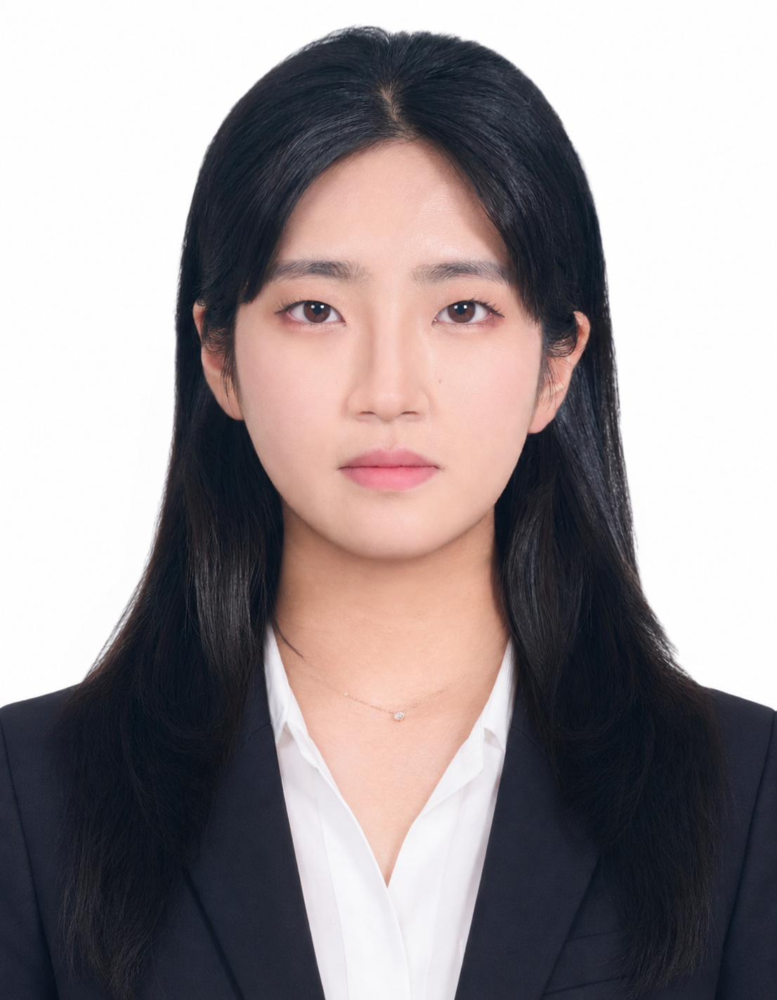

IoT · Braille Learning
에듀블은 사용자가 직접 점자를 만들고 입력 결과를 확인하며 반복적으로 학습하는 IoT 기반 점자 학습 서비스입니다. 모바일·웹 학습 앱과 물리적인 점자 학습 기기를 함께 활용합니다.
학습 앱 일부 화면 구현 · 물리적 버튼과 LED 동작 테스트 / 충남 학생 창업경진대회 대상
Case Study ↗Eduble
2025.12앱 UI · 하드웨어 테스트
사용자의 문제를,
이해하기 쉬운 화면으로.

Frontend Developer · 신입
2022.03 — 2026.02 · 졸업
화면이 처음 구현됐다고 해서 완성됐다고 생각하지 않습니다. 사용자가 어디에서 불편함을 느끼는지 살피고, 더 자연스러운 흐름을 고민하며 반복적으로 개선합니다. 웹 UI에서 React 상태 관리, Flutter 앱과 실시간 데이터 연동까지 구현 경험을 넓혀왔습니다.
HTML / CSS / JavaScript / React / Flutter / Firebase / Android Studio
시장 분석, 비즈니스 모델 설계, 사업계획서 작성 등 서비스 기획 과정
서비스 아이디어 기획, 앱 개발·디자인·프론트엔드 협업
C++ 시스템 제어, 프로그램 동작과 디버깅 학습